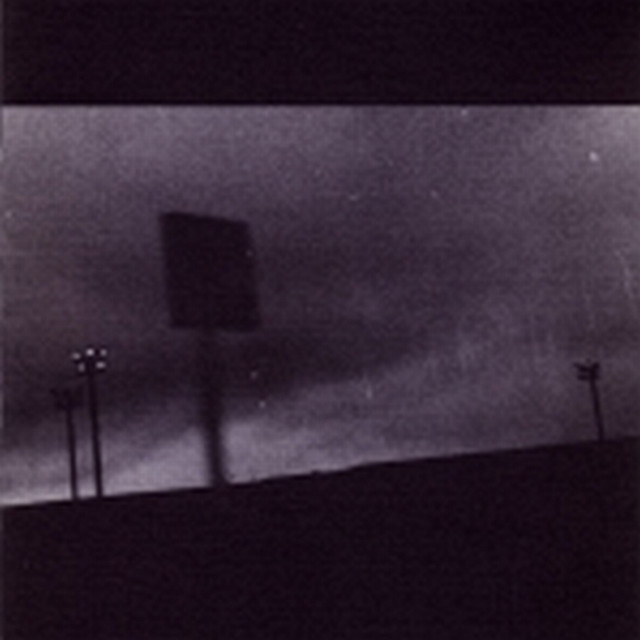
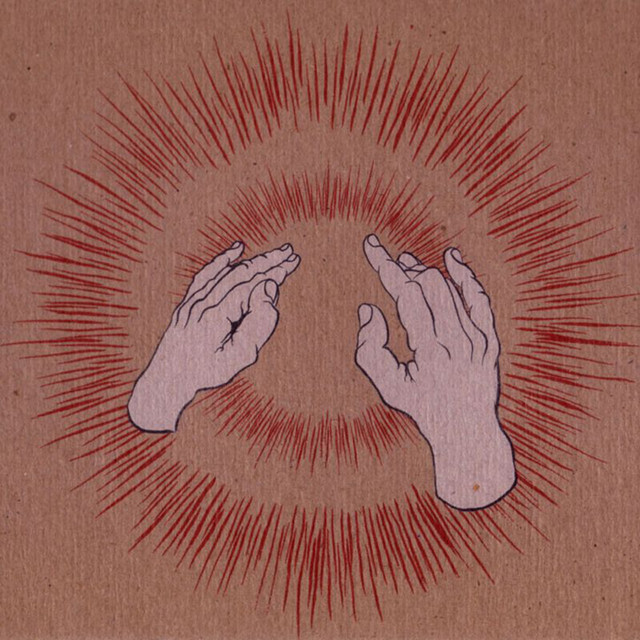
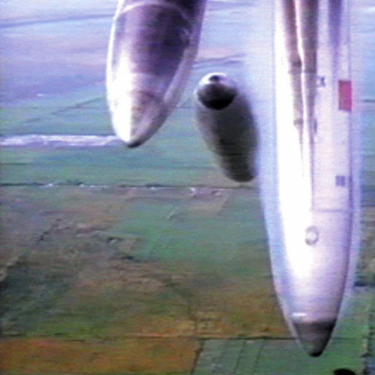
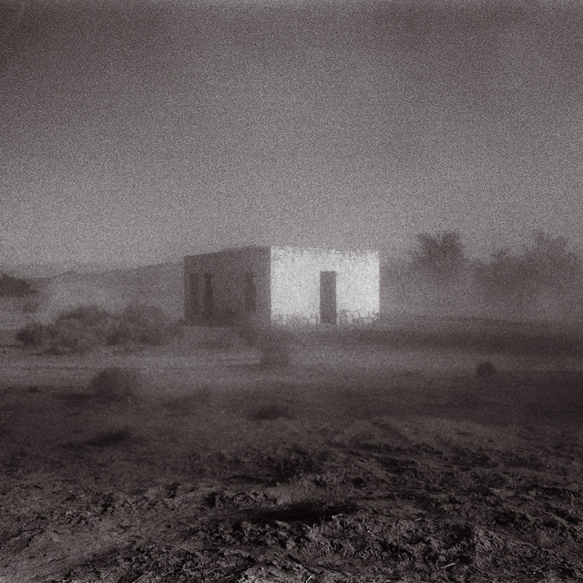
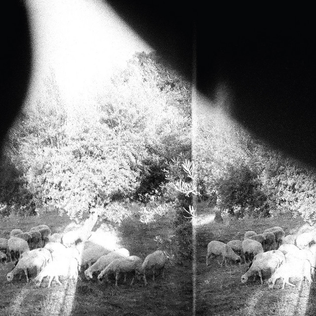
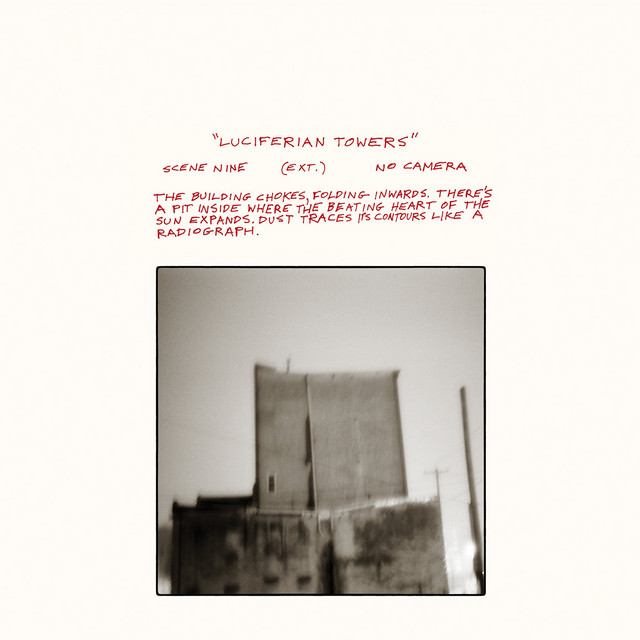
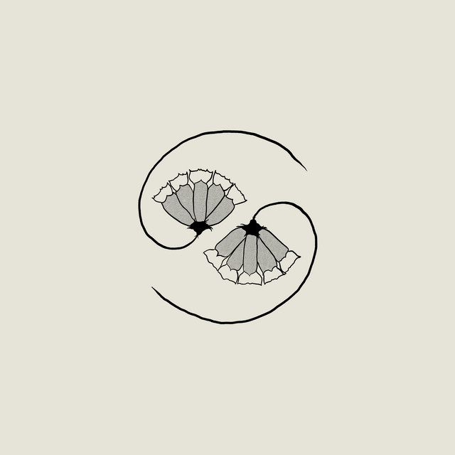
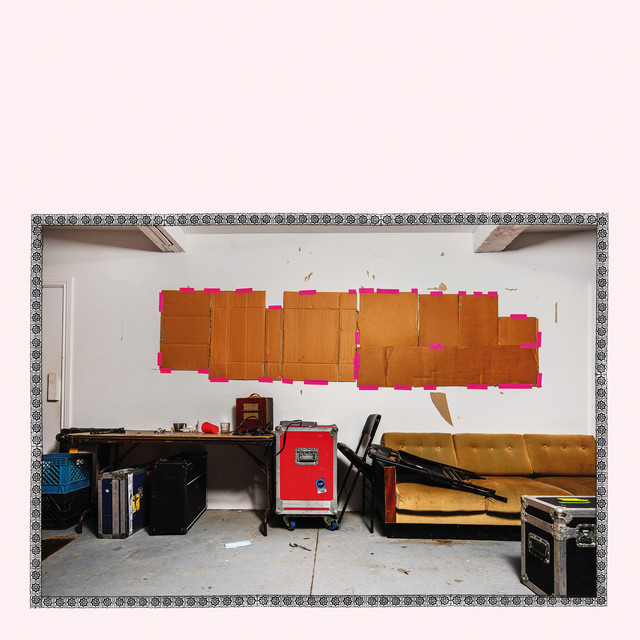

F♯ A♯ ∞ (1997)
Lift Your Skinny Fists like Antennas to Heaven (2000)
Yanqui U.X.O. (2002)
'Allelujah! Don't Bend! Ascend! (2012)
Asunder, Sweet and Other Distress (2015)
Luciferian Towers (2017)
G_d's Pee at State's End! (2021)
No Title as of 13 February 2024 28,340 Dead (2024)
Github repozitorij svih zadaća
Bandcamp stranica benda